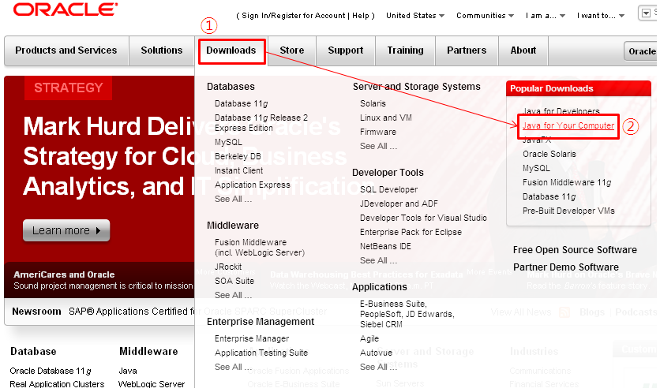
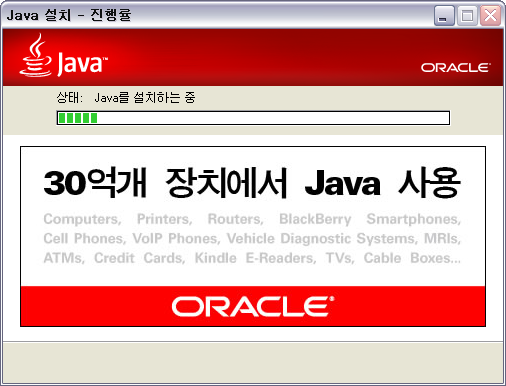

본 가이드는 Windows 환경을 기준 으로 작성되었습니다.
| JRE 버전 Mobello Studio를 실행하기 위해서는 JRE 1.6 이상의 버전이 설치되어야 합니다. |
| 부가 설명 JRE(J2SE : Java Runtime Environment) JRE는 자바 실행부분으로 Java 기반의 소프트웨어가 실행되는데 필요합니다. Java 가상머신(JVM), Java 플랫폼, Java 플랫폼 지원 라이브러리로 구성되어있습니다. |
설치파일 다운로드하기
최신버전의 JRE 다운로드하기
- 자바 다운로드 사이트(http://java.com/ko/download/index.jsp)에서 Java JRE 설치파일을 다운로드 받습니다.

- 다음의 링크가 동작하지 않을경우 하단의 JRE 다운로드하기를 참고하십시오.
JRE 다운로드하기
- 오라클 홈페이지(http://www.oracle.com/)에 접속합니다.
- 화면 상단의 "Downloads" 메뉴에서 "Java for Your Computer" 항목을 선택합니다.
 - Java JRE 설치파일을 다운로드 받습니다.
JRE 설치하기
- 다운로드 받은 설치파일을 더블클릭하여 실행합니다.
- 설치 버튼 을 클릭하여 JRE설치를 진행합니다.

- 설정된 경로로 파일 설치가 진행됩니다.

참고: JRE 최신버전에서는 Java FX도 함께 설치됩니다. - 이전 단계의 JRE 파일 설치가 완료되면 "JAVA를 성공적으로 설치했습니다" 라는 메세지를 확인 할 수 있습니다.

- "닫기" 버튼 을 누르면 Java 설치 프로세스가 완료됩니다.